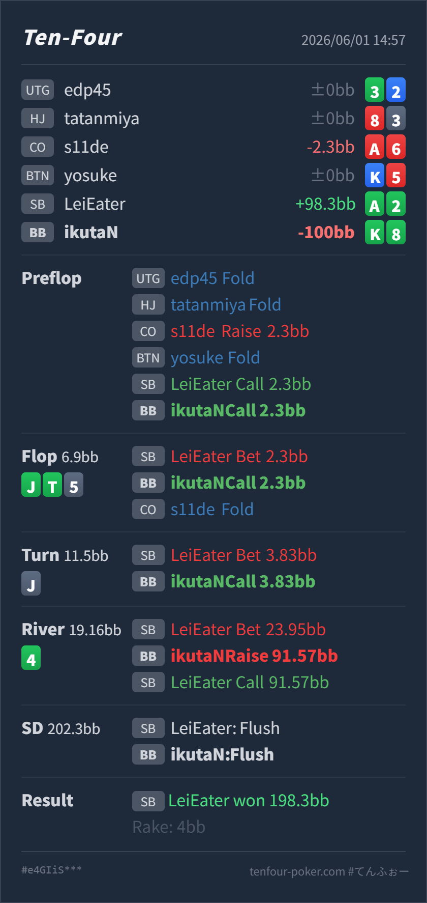

Preflop
良いK♣8♣ はdominated risk はありますが、BBでpriceが良く、flush / pair / backdoorで実現できる suited hand です。
GTO基準で明確にズレたのは river の raise です。preflop defend、flop / turn の call は自然ですが、paired board でKハイフラッシュを完成させた後、SBのoverbetに対して all-in 級に返すと、bluffを降ろしてAハイフラッシュやフルハウスに寄ったcall rangeへ突っ込みやすくなります。
K♣ 8♣A♣ 2♣ / CO flop foldJ♣ T♣ 5♠ J♠ 4♣K♣ J♣ T♣ 8♣ 4♣ のKハイフラッシュです。上位には A♣x♣ のAハイフラッシュと、JT / J5 / J4 / set由来のフルハウスがあります。K♣ 8♣A♣ 2♣ / CO flop foldJ♣ T♣ 5♠ J♠ 4♣198.3BB, rake 4BB
良いK♣8♣ はdominated risk はありますが、BBでpriceが良く、flush / pair / backdoorで実現できる suited hand です。
J♣ T♣ 5♠良い
HeroはKハイflush drawで、A♣以外のflush完成時に強いshowdown valueを持てます。現状はvalueではなくdrawです。
J♠良い
Kハイflush drawはまだ十分に続行できますが、完成してもnutではなく、paired board なので逆 implied odds があります。
4♣悪い
HeroはKハイフラッシュで強いですが、raiseしてcallされるvalueとしては薄い位置です。
| 論点 | その場で置きがちな見立て | どこがズレやすいか | 次回の基準 |
|---|---|---|---|
| river raise の価値対象 | Kハイフラッシュなので、相手の大きいbetに対して勝っているflushから取れる | SBはflop multiway donk、turn継続、river overbet まで来ています。この線はbluffもありますが、強いvalue側はA♣入りflushとfull houseに寄ります。Kハイflushでraiseすると、callしてほしい下のflushより、上位valueに当たる比率が上がります。 | non-nut flush は、相手がpolarに大きく打ったらまずcallでbluffを残す。raiseは「下のflushが十分callする」と読めるときだけ |
| draw完成後のレンジ更新 | flop / turn で良いdrawを持っていたので、river完成後は強いvalueになる | flop / turn のcallが良いことと、riverでraiseできることは別です。paired board では、flush完成と同時に相手のfull house / nut flush も残るため、完成後に相手レンジを再評価する必要があります。 | drawが完成したら、board pair、相手のbet size、相手のvalue rangeの上限を先に確認する |
| ストリート | その時点の見え方 | 実ハンドの位置づけ | 評価 | その場の一手 |
|---|---|---|---|---|
| Preflop | COの 2.3BB open は基準サイズで、SBがcallしたためBBは良いpriceでmultiwayに参加できます。SBのcold callにより、Axs、suited broadway、pair、suited connectorが相手側に残ります。 | K♣8♣ はdominated risk はありますが、BBでpriceが良く、flush / pair / backdoorで実現できる suited hand です。 | 良い | callで問題ありません。3betより、pot oddsを使って実現するhandです。 |
Flop J♣ T♣ 5♠ | SBがpreflop aggressorのCOに対してmultiwayで先にbetしており、Jx、Tx、set、club drawが含まれます。COもまだ後ろにいるため、Heroのraiseは強いrangeにぶつかりやすいです。 | HeroはKハイflush drawで、A♣以外のflush完成時に強いshowdown valueを持てます。現状はvalueではなくdrawです。 | 良い | 小さいdonk betにはcallが自然です。raiseより、COの行動を見つつequityを実現します。 |
Turn J♠ | boardがpairになり、SBのJxとset由来のfull house候補が濃くなります。一方、SBのbet sizeは小さく、Heroはflush drawを続けるpriceを得ています。 | Kハイflush drawはまだ十分に続行できますが、完成してもnutではなく、paired board なので逆 implied odds があります。 | 良い | callでよいです。ここでraiseしても強いmade handを降ろしにくく、drawとしての価格を使う方が自然です。 |
River 4♣ | flushは完成しましたが、SBがpot超えで打っています。SBのrangeはmissed handも含む一方、valueはA♣入りflush、Jx、full houseに寄ります。 | HeroはKハイフラッシュで強いですが、raiseしてcallされるvalueとしては薄い位置です。 | 悪い | call止めが本線です。raiseはAハイflush以上を中心にし、Kハイflushはbluffを残してshowdownへ行きます。 |
bluff / nut flush / full house の比率を考え、こちらのraiseにworse handがどれだけcallするかを見る。A♣2♣ で、river overbetからraiseをcallできる上位flushを持っていました。